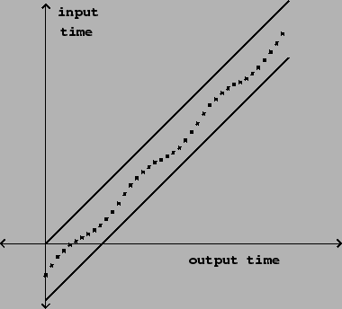
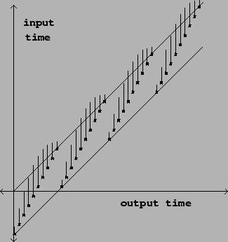
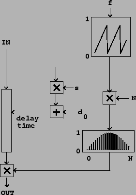
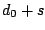
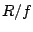
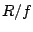
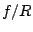
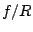
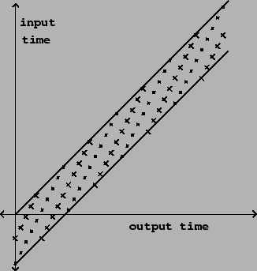

A favorite use of variable delay lines is to alter the pitch of an incoming sound using the Doppler effect. It may be desirable to alter the pitch variably (randomly or periodically, for example), or else to maintain a fixed musical interval of transposition over a length of time.
Returning to Figure 7.17, we see that with a single variable delay line we can maintain any desired pitch shift for a limited interval of time, but if we wish to sustain a fixed transposition we will always eventually land outside the diagonal strip of admissible delay times. In the simplest scenario, we simply vary the transposition up and down so as to remain in the strip.
|  |
This works, for example, if we wish to apply vibrato
to a sound as shown in Figure 7.19.
Here the delay function is
|  |
Suppose, on the other hand, that we wish to maintain a constant transposition over a longer interval of time. In this case we can't maintain the transposition forever, but it is still possible to maintain it over fixed intervals of time broken by discontinuous changes, as shown in Figure 7.20. The delay time is the output of a suitably normalized sawtooth function, and the output of the variable delay line is enveloped as shown in the figure to avoid discontinuities.
|  |
This is accomplished as shown in Figure 7.21.
The output of the sawtooth generator is used in two ways. First it is adjusted
to run between the bounds and , and this adjusted sawtooth
controls the delay time, in samples. The initial delay should be at
least enough to make the variable delay feasible; for four-point interpolation
it must be at least one sample. Larger values of add a constant,
additional delay to the output; this is usually offered as a control in a
pitch shifter since it is essentially free. The quantity  is sometimes
called the
window size. It corresponds roughly to the sample length in a
looping sampler (Section 2.2).
is sometimes
called the
window size. It corresponds roughly to the sample length in a
looping sampler (Section 2.2).
The sawtooth output is also used to envelope the output in exactly the same
way as in the enveloped wavetable sampler of Figure 2.7
(Page  ). The
envelope is zero at the points where the sawtooth wraps around, and in
between, rises smoothly to a maximum value of 1 (for unit gain).
). The
envelope is zero at the points where the sawtooth wraps around, and in
between, rises smoothly to a maximum value of 1 (for unit gain).
If the frequency of the sawtooth wave is  (in cycles per second), then
its value sweeps from 0 to 1 every  samples (where
(in cycles per second), then
its value sweeps from 0 to 1 every  samples (where  is the sample rate).
The difference between successive values is thus . If we let
is the sample rate).
The difference between successive values is thus . If we let  denote the output of the sawtooth oscillator, then
denote the output of the sawtooth oscillator, then
|  |
The pitch shifter can transpose either upward (using negative sawtooth
frequencies, as in the figure) or downward, using positive ones. Pitch shift is
usually controlled by changing  with
with  fixed. To get a
desired transposition interval
fixed. To get a
desired transposition interval  , set
, set
Although the frequency may be changed at will, even discontinuously,  must
be changed more carefully. A possible solution is to mute the output while
changing
must
be changed more carefully. A possible solution is to mute the output while
changing  discontinuously; alternatively,
discontinuously; alternatively,  may be ramped continuously but
this causes hard-to-control Doppler shifts.
may be ramped continuously but
this causes hard-to-control Doppler shifts.
A good choice of envelope is one half cycle of a sinusoid. If we assume
on average that the two delay outputs are uncorrelated (Page
 ), the signal power from the two delay lines, after
enveloping, will add to a constant (since the sum of squares of the two
envelopes is one).
), the signal power from the two delay lines, after
enveloping, will add to a constant (since the sum of squares of the two
envelopes is one).
Many variations exist on this pitch shifting algorithm. One classic variant uses a single delay line, with no enveloping at all. In this situation it is necessary to choose the point at which the delay time jumps, and the point it jumps to, so that the output stays continuous. For example, one could find a point where the output signal passes through zero (a ``zero crossing") and jump discontinuously to another one. Using only one delay line has the advantage that the signal output sounds more ``present". A disadvantage is that, since the delay time is a function of input signal value, the output is no longer a linear function of the input, so non-periodic inputs can give rise to artifacts such as difference tones.